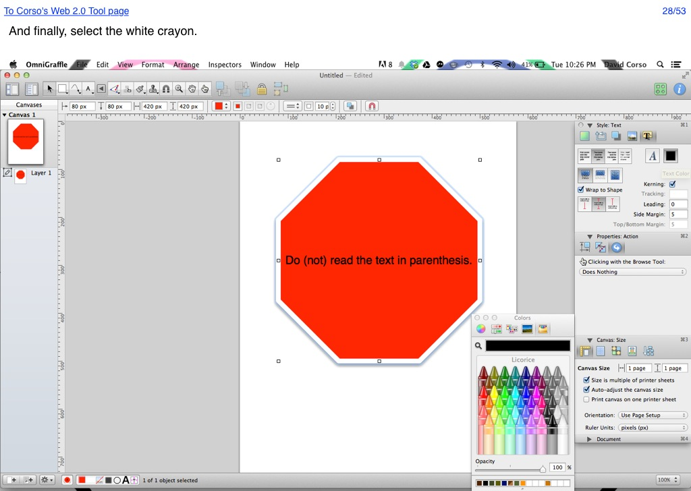

<map name="GraffleExport">
	<area shape=rect coords="5,7,194,24" href="http://66.147.244.111/~immunisg/ET703/CorsoGraphics/Web2.0Tool/WebTool.html">
	<area shape=rect coords="978,7,1017,24" href="53.html">
	<area shape=poly coords="842,674,826,674,826,633,826,633,834,615,843,633,842,633,842,674" href="29.html">
</map>

